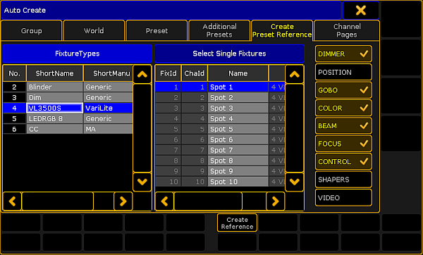

Create Preset Reference
A preset reference is very handy when it comes to color presets since the colors of every fixture and manufacturer may vary greatly.
Requirement:
- Presets have already been created.
To create preset reference:
- Press Setup.
- Tap Auto Create.
- The dialog Auto Create opens.
- Then, tap the tab Create Preset Reference.

Create preset reference
- Choose a fixture type in the table FixtureTypes.
- Next, tap a fixture as reference for your preset in the table Select Single Fixtures.
- After that, select the preset types, on the right of the dialog, to which the reference is to relate.
- Eventually, tap Create Reference.
- The preset reference has now been created in the fixture type within this show file.
Important:
To use preset references in other show files, export the fixture type after creating the reference.
- To close the menu, tap
 in the upper right corner of the window.
in the upper right corner of the window.